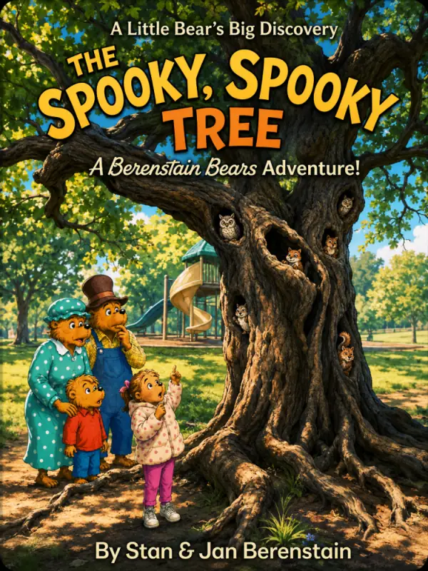
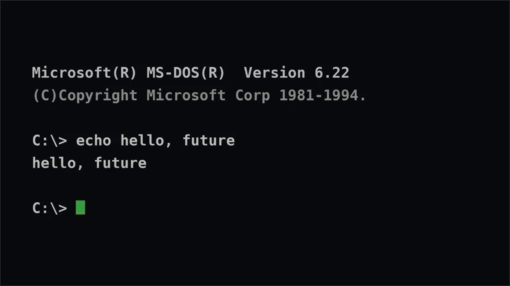
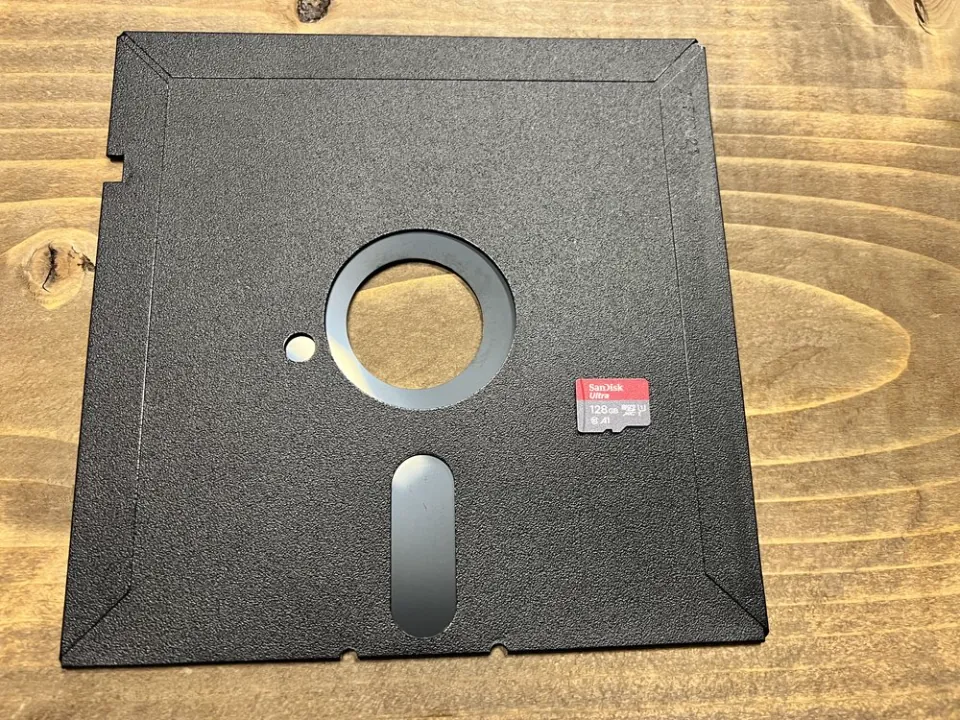
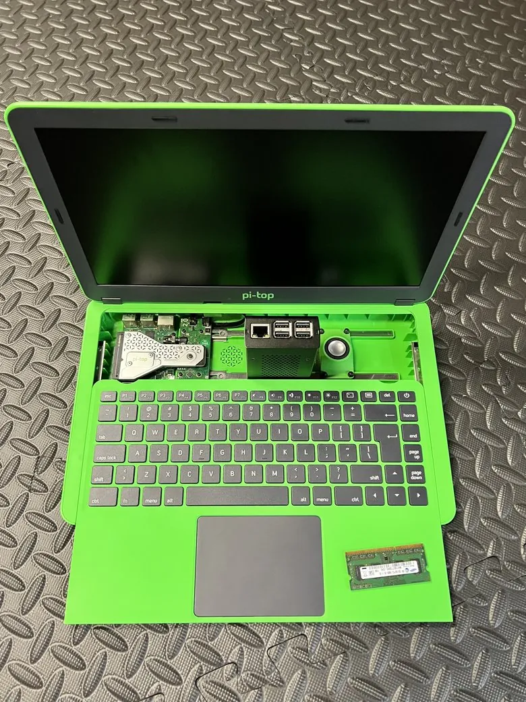
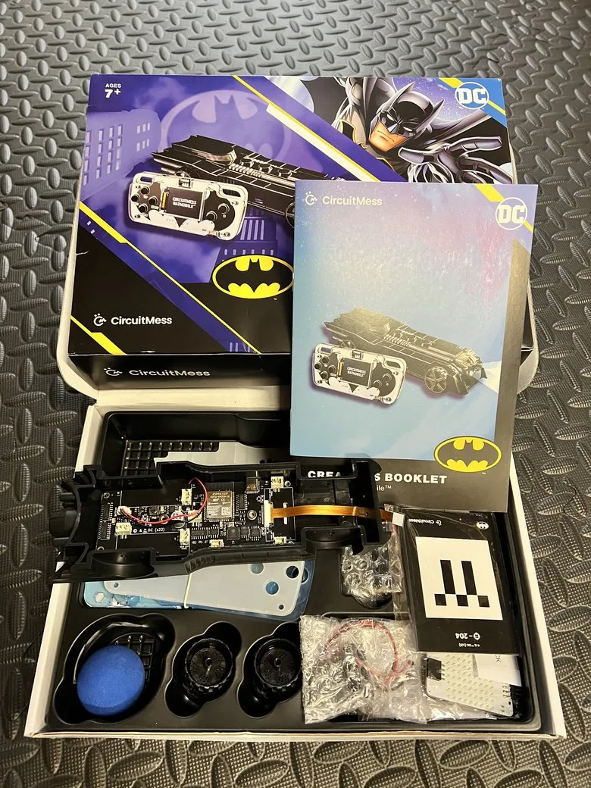

First published on LinkedIn in July 2026, the summer before kindergarten. It is republished here as written, apart from the LinkedIn framing, a few captions and one link. A short afterword follows.
Last month, my oldest daughter graduated from preschool. This fall, she starts kindergarten, her first real step into the wider world (and her little sister is coming up right behind her, taking notes). So beginnings have been on my mind lately.
It started with a tree...
On a walk to the playground after preschool pickup this winter, my daughter and I passed a big, gnarled old tree: hollows, reaching branches, the works. We both had the same thought: it looked just like the spooky old tree from one of her favorite Berenstain Bears books!
Then the idea hit me to make the scene into a book cover using AI tools. So we ran an experiment. We took a picture of it and asked AI a question: could it turn a picture of her in front of the tree into a similar book cover? Thankfully, I chose the right tool for the job, and it performed perfectly:

AI fan art made for my daughter from our photo. The Berenstain Bears © Berenstain Enterprises. Not affiliated.
Look closely and you'll even spot the playground in the background (because the photo we gave it was just a part of the full prompt). Which turned into her first AI vocabulary lesson after she asked me how I did it. I explained that it wasn't magic, and what I "told it" to do is called a "prompt." And when that cover came out looking, to her, like actual magic, it opened the door to a bigger idea: AI doesn't create from nothing. It learns from references and patterns, from our photo and from the style of books that real people made first. Technology based on the efforts of real humans. A lesson worth learning at any age.
It got me nostalgic, and I started thinking about it all again a couple weekends ago when my youngest turned two, immediately followed by my oldest turning five; both coalescing with Father's Day to top it off! While watching my girls open gifts and rapidly snapping hundreds of pictures with my "smartphone" (while ignoring the cloud storage costs), I thought back to my first computer. Built piece by piece from parts I bought one at a time in 8th grade, funded by mowing the fire-ant-infested sandy yards of South Georgia. Back when "USB" was the brand-new thing. I taught myself how to put it all together from a Microsoft VHS tape borrowed from the public library, and got it running DOS, followed by Windows 3.1 with a square mouse and trackball, and eventually even a dot matrix printer for good measure.

What I wanted it for more than anything was a connection to the wider world (beyond the center of the cornfield I lived in). I can still picture those early TV commercials flashing a "www-dot" address at the end, and me scribbling each one onto a sheet of notebook paper. Then typing them up on a clackity typewriter out of a desire to pretend it was a real computer, building a handwritten index of the internet, saving it up for the day I'd finally have a machine and a modem to go explore them all.

And that kid never really stopped building. These days my bench runs on pi-top gear: Raspberry Pi computers you assemble and tinker with yourself. Same idea as that 8th-grade build, just three decades of Moore's Law later. (The longer arc, from library VHS tapes to now, is in the story on the front page.)

Some things come full circle. And now it's my daughter's turn. We're finally building a CircuitMess Batmobile: a kit I backed on Kickstarter right after she was born, then tucked away for years, waiting for her to be old enough to build it with me (patience is a maker skill too, if you ask me). Circuit boards, soldering iron, the works. Once it's assembled, it won't just be remote-controlled: it uses a camera and machine learning to track objects and drive itself, and the controller's screen shows you what the car "sees." The same preschool kid who prompts AI for book covers is also learning, solder joint by solder joint, what's actually inside the "magic."

And here's what I love about it being the Batmobile, specifically: Batman is the superhero with no superpowers. No radioactive spider, no home planet, no magic ring. Just a human being who builds. Who trains, prepares, and turns tools into capability. His power was never handed to him and switched on; he builds it, trains it, and directs it. My daughter also thinks I am actually Batman for my job at work. So as we assemble his car, I keep thinking about the kind of superpower I actually want to hand my daughter. Not a cape that does the work for her. The thing Batman really has: the right tools, amplified by a prepared and curious mind.
Because used well, that's exactly what AI can be: a real superpower. It puts very nearly the whole sum of human knowledge within reach of a single, well-asked question. It hands a curious kid anywhere with a signal (even in small-town South Georgia off dirt roads where cable TV lines didn't reach, but phone lines did) the kind of reach that used to demand institutions, gatekeepers, and no small amount of luck. That's the part that thrills me most: it doesn't only amplify the already advantaged; it can level the field. But like every gadget on that utility belt, the power is all in the wielding. The same tool, in a mind that never learned to question it, is just a faster way to be confidently wrong. Which is exactly why I'd rather start teaching the wielding at five than at fifteen.
There's something underneath all of this that I care about more than I usually say out loud. When people hear "my kid uses AI," they often picture the version of technology that worries me too: a kid melted into the couch, endless videos, a tablet as babysitter, a game with no off-ramp. The black mirror, the screen that goes dark and reflects your own face back, asking nothing of you but your attention. But the line I actually care about isn't screen versus no screen. It's passive versus active. Builders, not browsers. Kids who create, build, and delegate, rather than just browse, swipe, and scroll. The superpower was never in the swiping; it's in the building! The Batmobile has a screen, and she earns it by soldering the board behind it. The pi-top is a simple computer with a screen, but one she'll assemble with her own hands and use to learn some basic coding. Even AI belongs on the building side of that line: something that requires active thinking, that you can create with and engage with, to hand work to while staying in command, not something you doomscroll past. I'm less interested in raising kids who just watch the magic than ones who know what's inside it, and who stay in the lead of whatever tech they pick up.
With my mother visiting from out of town to spend time with her grandkids, the generational contrast struck me. On one end, I'm introducing my daughter to AI. On the other, I'm reassuring my almost-80-year-old mother, who keeps seeing AI in the news on her phone and feels uneasy about it, asking me who this "AL" guy is that the news keeps talking about. My breakthrough? Pointing out she already uses it every time she says "Hey Google" to search by voice. (Not sure it landed as well as I'd hoped, but it beat my earlier attempt at explaining cloud computing as Netflix streaming versus popping in a VHS tape.)
Watching my daughter prompt an AI as casually as I once typed a URL, I keep coming back to trajectory. That notebook-paper list of websites? Within a few years it became the everyday internet, and the internet went from something you "logged onto" to the air my generation just breathes. AI is on exactly that arc for my girls. By the time they're my age, it won't be a tool they reach for; it'll be ambient and assumed, woven through everything, the way the web is for me, and electricity was for a generation that once wondered what it was even for. What my girls will define as AI in their future will not be what it's being defined as today.
That's the promise and the peril, bundled into the same sentence. The promise: a generation growing up fluent in the most capable tools we've ever built. The peril: those same tools, in the same young hands, before the judgment to wield them well has caught up. But I don't read that as cause for fear. Every technology that ever reshaped the world looked alarming from the on-ramp, and we never got through any of them by hiding. We got through by engaging deliberately, and by teaching the next generation to do the same. I'd rather raise kids who can navigate this world than kids who are afraid of it. Imagine a world where the lightbulb had never become mainstream out of fear it would burn the world down.
A few weeks ago, I happened to read an article on exactly this (children and AI), and it put hard numbers to the road ahead. Most young people already use these tools regularly; a surprising share use them every day. The part that stuck with me wasn't the genuine risks, real as they are, but a quieter statistic: only about one in four parents whose kids use AI even realize it's happening. The technology is already here, already in their hands. The only open question is whether we're in the conversation with them.
And the author, a psychologist who studies this for a living, didn't counsel panic. His advice read almost like a transcript of the afternoon we'd just had. Ask, with real interest, what they're using and why, before laying down rules. Explore the tools side by side instead of from across the room. Teach them to treat every output as a draft to verify, not a verdict to accept. Protect the offline things fiercely: the hobbies, the building, the unstructured time that no screen can replace. And above all, be honest about what AI is and isn't: an extraordinary tool that learns from patterns, not a person who cares back. I hadn't read any of that when we sat down with a photo of a tree. We just did it. Apparently, that's the playbook.
That last point, a tool built from patterns, not a being with feelings, is the one I keep turning over. Because here's the thought that's stuck with me since: raising a child and developing an AI model aren't so different. Both are a mix of nature and nurture: what's instinctive and what gets taught. Both grow through stages, from infancy toward independence. Neither is born with bias; they absorb the good and the bad from whatever surrounds them. And it takes a village to instill core values and a sense of right and wrong, through learning that's sometimes supervised and sometimes very much unsupervised (any parent will recognize both modes).
Here's where my day job creeps in: both can also charge full speed toward a goal without grasping what could go wrong. That's why freedom gets earned a little at a time, with guidance and guardrails to match. Trust, but verify. A parenting principle and a security principle, it turns out. There's a phrase Accenture's CEO, Julie Sweet, keeps coming back to for the AI era, and since I work there, it's one I think about a lot: Human in the Lead. Not a human parked somewhere in the loop, but a human actually steering. The models we build end up reflecting us. So do our kids. More than anything, I hope to foster a curiosity for learning in my daughters. In a technical world that changes faster every year, that curiosity, not any single skill, is what I believe will always drive success.
This fall, my oldest daughter walks into her kindergarten classroom for the first time. And honestly? I can't wait to see where it all goes, not with dread, but with the same curiosity I'm trying to hand down. My girls will grow up with a superpower I had to ration for myself at their age, fluent in tools I'll probably be asking them to explain to me before long.
Every generation hands the next a little more power than it inherited. The trick was never the power itself; it's raising someone wise and curious enough to wield it well. That's not a future to fear. It's one to help build, and then to step back and watch them build it, better than we ever could.
*Article drafted with the support of an AI thinking partner, which felt like the honest way to write about responsibly handing my kids these same tools.
Three months later
This went up on LinkedIn two weeks after Father's Day. It lives here now because this is where it belongs: the DOS screen, the floppy, the pi-top and the Batmobile on this page are the same ones on the front page.
One line has done more work than the rest. "Builders, not browsers" started as a rule for raising two girls and became the line this whole site runs on. Every dispatch, drill and field guide here makes the same bet: hand someone a tool, show them what is inside it, and keep a human in the lead.
The other line I would underline now is the psychologist's. Treat every output as a draft to verify, not a verdict to accept. That holds at kindergarten and at the office.
Further reading: the original on LinkedIn (opens in a new tab).
$ cd ~/workbench && make